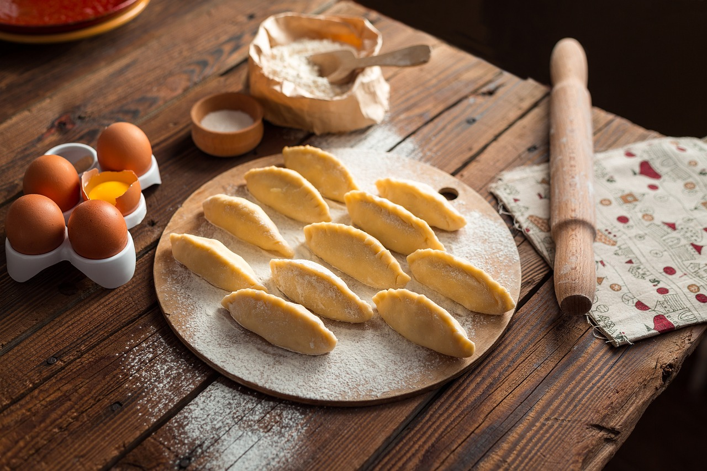

Algorytmika
Multum sposobów na osiągnięcie konkretnego celu, każdy z własnymi wadami i zaletami.
Kombinatoryka
Zliczanie wszystkich możliwości.
Wędrówki górskie

Wspaniałe górskie powietrze, klimatyczne schroniska, widowiskowe krajobrazy i najlepsze towarzystwo.
Gotowanie
Eksperymentowanie z przyprawami, dodatkami, strukturami, zapachami, smakami i aspektami wizualnymi.
Gry komputerowe
Dodatkowa płaszczyzna pozwalająca oderwać się od problemów świata rzeczywistego i pochylenie się nad problemami świata wirtualnego.
Bieganie
Zarówno jako sport sam w sobie jak i również część innego sportu, na przykład koszykówki.